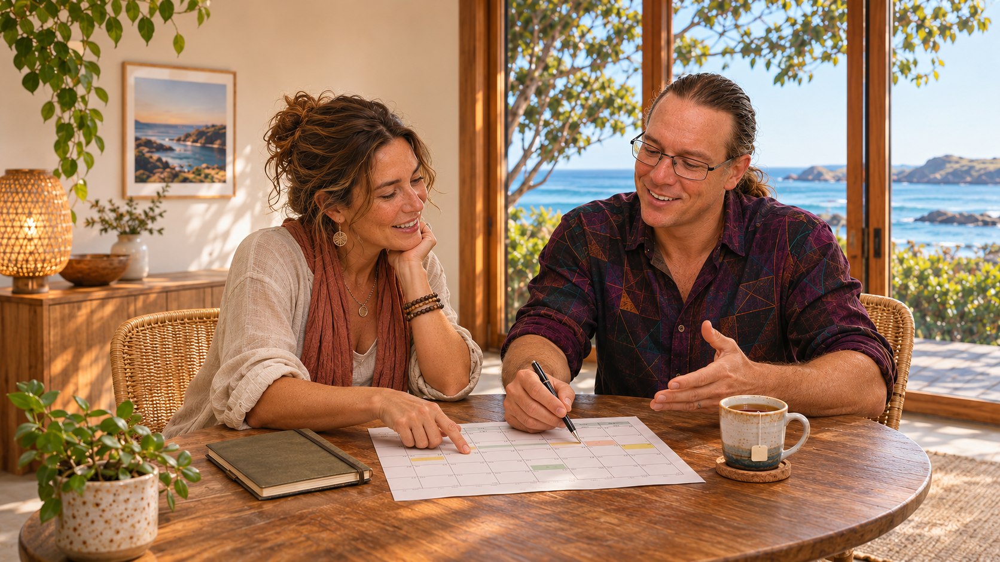

Love is not a ration
Affection and intimacy grow through attention, honesty and practice. A larger family does not require every bond to look identical.

Independent groups of three or more adults can build families around the relationships they choose. Each group decides what size and shape work for them.
Concept artwork
Law currently recognises different parts of this idea in different places. The lived framework is broader: shared commitment, shared care, shared futures and a household constitution designed by the adults inside it.
Affection and intimacy grow through attention, honesty and practice. A larger family does not require every bond to look identical.
Illness, newborn nights, paid work, school runs and elder care no longer fall across one narrow bridge.
More committed adults may bring continuity, varied skills, wider culture and more available attention to daily family life.
The group is an agreement among whole people. Individual voice, privacy, property, friendships and freedom of conscience remain real.
One person may love cooking, another numbers, another teaching, another travel. Complementarity becomes household capacity.
Income loss, injury, exhaustion and change still happen. A larger support network gives the family more ways to adapt.
Romance is one layer. A durable family also makes the practical layers visible.
Who is part of the marriage, who lives together, how people get to know prospective members and who takes part in shared decisions about joining.
How affection, sexuality, privacy, sleep, dates and changing desire are talked about without pretending every bond is equal.
How children, adults, elders, homes, meals and rest receive time and attention.
What stays individual, what is shared, and how housing, income, debt, inheritance and work are handled.
Which decisions are individual, relational, household-wide or child-centred, and what happens when agreement is not immediate.
How the family welcomes growth, handles conflict, supports repair and makes an exit survivable.
Group marriage does not prescribe one number of people, one gender balance, one sexuality, one home or one division of roles. The meaningful question is whether the relationships form a capable, conscious family.